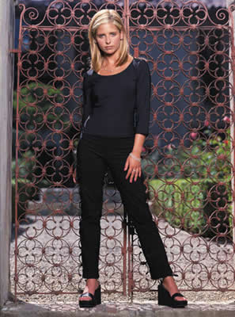
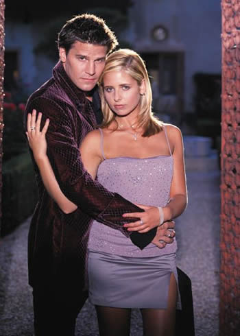
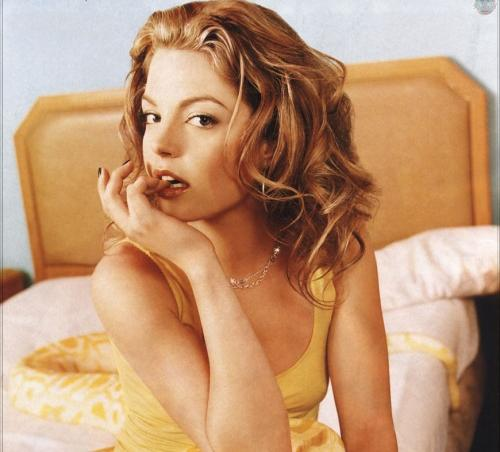
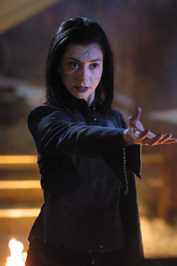

Since March 3rd, 1997, the world has known the power of the Slayer. A chosen one blessed with the strength and skill to stop them--the vampires, the demons, and the forces of darkness--she was always alone. On Tuesday nights (and Mondays at first) for the last six and a half years the slayer regularly thrusted her charming stake in the hearts of people all over this nation for about an hour or so.

Over its 7 seasons on television, the show has changed in the most amazing ways. The first season of Buffy was bad, I'll give you that. It was interesting though, unlike anything else out there. It was catchy. It caught me. Buffy, ordinary high school sophomore, was the Chosen One, in some ways doomed with her sacred duty to fight demons and vampires. What caught me about the show was perhaps the second episode. Centered around witches and not vampires, I was puzzled. Certainly a "vampire slayer" would fight vampires and not witches? I think the show really struck a chord, demonstrating that there was more than the supernatural at work with this show. Things only got better in season two. The season revolved around the relationship with Buffy and Angel, and after a roller coaster of emotion, sex, love, and death, Buffy killed Angel in the amazing episode "Becoming Part II." It was at this moment I was hooked. Utterly hooked.

Season three and four really didn't impress. I was never a fan of Faith. I thougth Kendra was cool, and we just troubled with how the writers treated her death. It was like she died and that was it, that was all, slayer dead. All of a sudden Faith comes along and she's just this FORCE. She was meant to be where Kendra was not, and I never go that. Faith was cool though--bad girl. She got hers, knife in the gut at the end of season three. Season four took Buffy to college, and it was my first exposure to Joss Whedon's vision. The story arc of the season involved Buffy and her friends growing apart after high school and experience life long changes. Buffy started a relationship with a beefhead. Willow fell in love with a woman. Xander grew closer to Anya, also facing life with only a GED. Giles, feeling isolated and unimportant, began to ponder leaving Sunnydale, leaving his slayer on her own. It was a great season with shitty conflicts. Episodes like "Pangs", "Hush", "Something Blue", "The Yoko Factor", "A New Man", and "Restless" are about the only good things about this season, but there's alot to hate here, lets be honest.

At the conclution of season four, we have a slayer with a mission: "You think you know, what you are, what you will become...you haven't even begun." Season Five is by far the best season of Buffy. It's implementation, the conflict, the emotion, the sumation, all of it just rocked my world. There are so many arcs that just worked so perfectly. I loved Dawn (the character, ick, but the reasons for bringing her, flawless). The explanation for her appearance was just the dumbest thing ever, but it worked. The season-long arc of "family" really resonated, I felt. The arc with Buffy's mother's medical problems was a bit telling, but climaxed unexpectedly. I didn't know Joyce was going to die. She was amazing, among the warmest and most love characters, and Joss killed her, and "The Body" was the best episode of Buffy I've ever seen. The arc with Glory kicked ass! By far, my favorite Big Bad. The development of the multi-season arc with Willow was also very believable. My favorite new character: Olaf the Troll, he was just hilarious! My new favorite character: Anya. I'm sorry, giving Anya control of The Magic Box was just the funniest thing on television. I love that woman. The finale, "The Gift" is my favorite episode of Buffy. Buffy's plight, her duty, her choice, and her death, all of it was just astounding. Willow, Xander, and most importantly Giles all demonstrated amazing character in this episode, and I was buzzing for months.

Season six and seven, somewhat unnecessary, did alot for the show as well. Buffy came back from the dead, and season six was the most true account of human emotion that the show had ever produced. Buffy was depressed, understandably, Willow was a magic junkie, Xander was unsure, Giles wanted more, everything got complicated, and the season's lack of a Big Bad eventually revealed that this season's menace was the characters themselves. This was most obviously revealed when Willow, hellbent on getting revenge for Tara's murder, attacks her friends in order to bring an end to her pain. Our beloved characthers get over themselves and overcame a grieving Willow. Season seven ended the series, bringing Buffy against her greatest foe, making her a leader and forging a whole new generation of slayers. There are alot of strong episodes in this season, my favorites being "Selfless", "Him", "Conversations with Dead People", "Storyteller", "Lies My Parents Told Me", and "Chosen." Once again, the series brought our characters to amazing height, but it didn't seem as timely as it did two years earlier. Something was lost. Alot of potential squandered. The series ended with the amazing finale "Chosen", but the slayer still lives. Buffy's out there, among us. Can you see her?
My Personal Top 10 Buffy Episodes
- 10. "A New Man": Giles feels out of the loop (and unnecessary) when he's the last to find out about Buffy's involvement with Riley, the Initiative, and Professor Maggie Walsh--to whom he takes an immediate dislike. Little does he know that he's about to reenter the spotlight: His troublemaking old pal Ethan Rayne comes to town and turns him into a Fyarl demon.
- 9. "Chosen": Buffy meets her destiny in the series finale when she leads the Scoobies, the Potentials and Angel into the Hellmouth for a final showdown with the First. Joss Whedon, the show's creator, wrote and directed the episode.
- 8. "Selfless": A wish granted by Anya has devastating consequences in this alternately witty and wrenching tale. Anya's breakup with Xander has driven her to return to her vengeance-demon ways with, well, a vengeance. But that changes after she takes a humiliated coed's desire to make frat boys "feel what it's like to have [their] hearts ripped out" too literally. Horrified by the carnage she has caused, Anya struggles to wash the blood from her hands. Juxtaposed with this Macbeth-like scene is a hilarious flashback detailing Anya's transformation from medieval Swedish housewife to demon. Back in the present, Willow discovers the bodies and alerts Buffy.
- 7. "Doppelgangland": The former wish-granting Anya, now a math-flunking mortal, enlists an unsuspecting Willow to help recover her "power center." Instead, their spell prompts the return of Evil Willow from "The Wish"
- 6. "Something Blue": Willow has no idea that her spell (to have her "will be done") has actually worked. She inadvertently strikes Giles blind, makes Xander a "demon magnet"--and causes Spike and Buffy to become betrothed. The demon D'Hoffryn is so impressed at the pain Willow's inflicted that he offers to elevate her to a demon, but she turns him down and works to reverse the spell.
- 5. "Triangle": Buffy's post-Riley emotional turmoil is interrupted by a malevolent troll accidentally set loose on Sunnydale by Anya and Willow as a result of their bickering. The Scoobies team up to take him down, but the monster's magic hammer packs a mean wallop.
- 4. "Becoming Part II": Willow, who got conked in the last episode during the library battle, emerges from a coma and casts the spell initiated by Jenny to restore Angel's soul. Despite Angel's new soulfulness, only his blood can close the portal. Buffy stabs him, sending her favorite bad boy to a much, much warmer climate.
- 3. "Once More, With Feeling": Series creator Joss Whedon wrote, directed and composed the music for this episode in which a mysterious force impels the Scooby Gang to burst into song. Even Buffy devotees may be hard-pressed to find an episode as off-the-wall as this, as Sunnydale denizens become players in production numbers in which cast members do their own vocals. Hear Tara sing about her love for Willow! See Xander and Anya perform a duet! Listen to Buffy croon about her lack of life direction! Who's behind the music? Dawn provides the key.
- 2. "The Gift": Glory trumped the good guys when she stole the Slayer's little sis out from under her nose. In a race against time, Buffy and pals must now execute a risky plan to rescue Dawn before her blood is spilled--which would open a portal to Glory's demonic dimension, creating a literal hell on Earth.
- 1. "The Body": Death gets remarkably personal in this haunting, well-scripted episode, which was written and directed by series creator Joss Whedon. After months of fighting and ostensibly overcoming a brain tumor, Joyce dies unexpectedly and in a manner seldom seen on Buffy--peacefully and quietly. Reeling from the shock of discovering her mother's lifeless body on the living-room sofa, Buffy manages to pull herself together enough to deliver the news to an already emotionally fragile Dawn--whose overwhelming denial makes fighting the boundless forces of evil look like child's play.